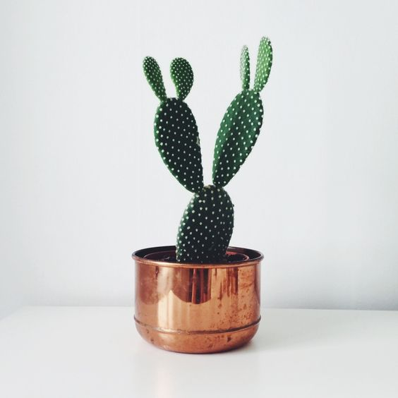
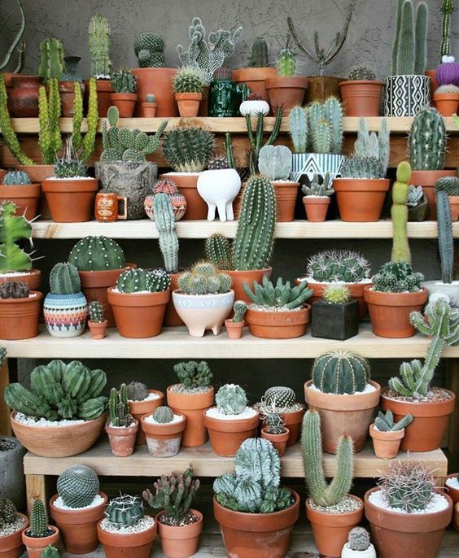
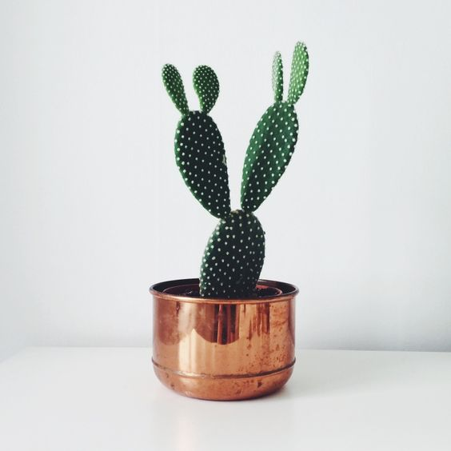
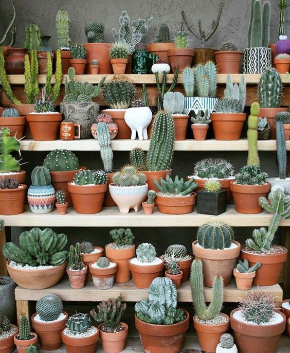

Cacti are one of my other favorite plants as to how Cacti are always seen as a desert plants that can be dangerous to be around. However, although it may look dangerous, it really isn't. Cacti plants are also similar to succulents due to it being low maintence by being watered very little.